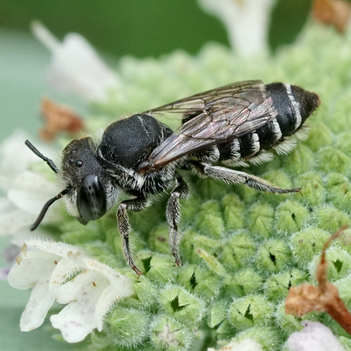
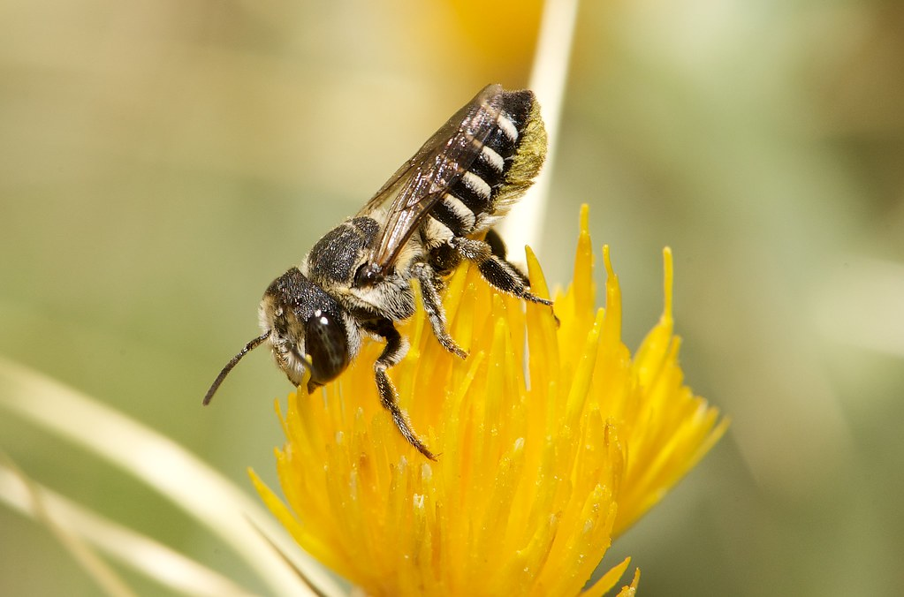

- Megachile rotundata 
- Megachile apicalis 

Bees are flying insects closely related to wasps and ants. They are known for their important role in pollinating plants and producing honey. Many bee species have black and yellow coloration, but many do not—they actually come in a variety of colors, including green, blue, red, or black. Some are striped, and some even have a metallic sheen. here are over 20,000 bee species worldwide, including the honey bee, which originated in Eurasia and has been imported around the globe as a domesticated species. Wild bees species live on every continent except Antarctica. Bees feed exclusively on sugary nectar and protein-rich pollen from flowering plants, unlike the carnivorous wasps from which they evolved.
Go to bottom
Bees are crucial for pollination, and their role in the ecosystem is invaluable.
BottomExplore more about bees on the following links:
Interesting facts about bees
Detailed information
Simple and short Facts and info for Kids!